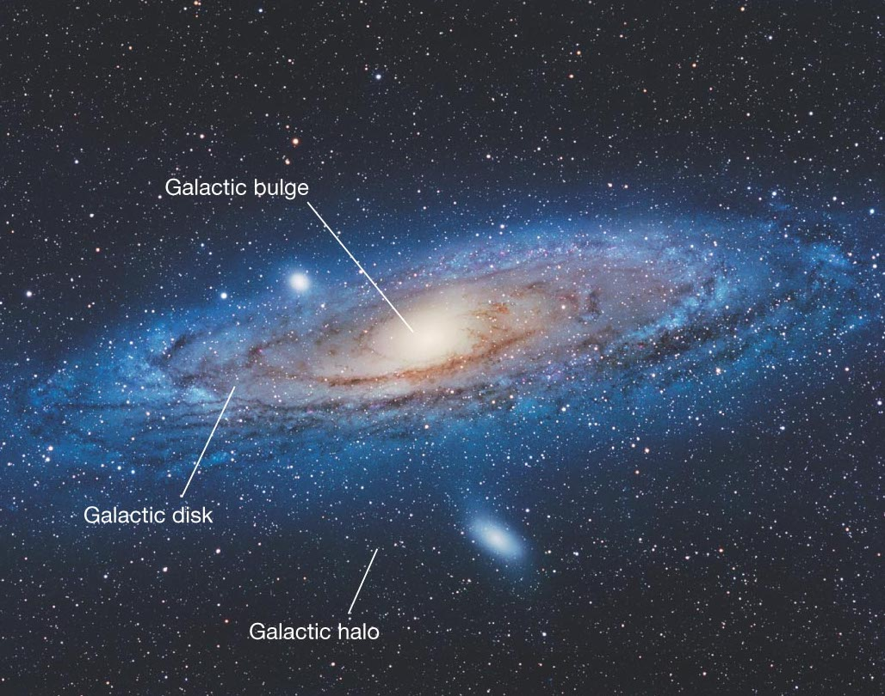
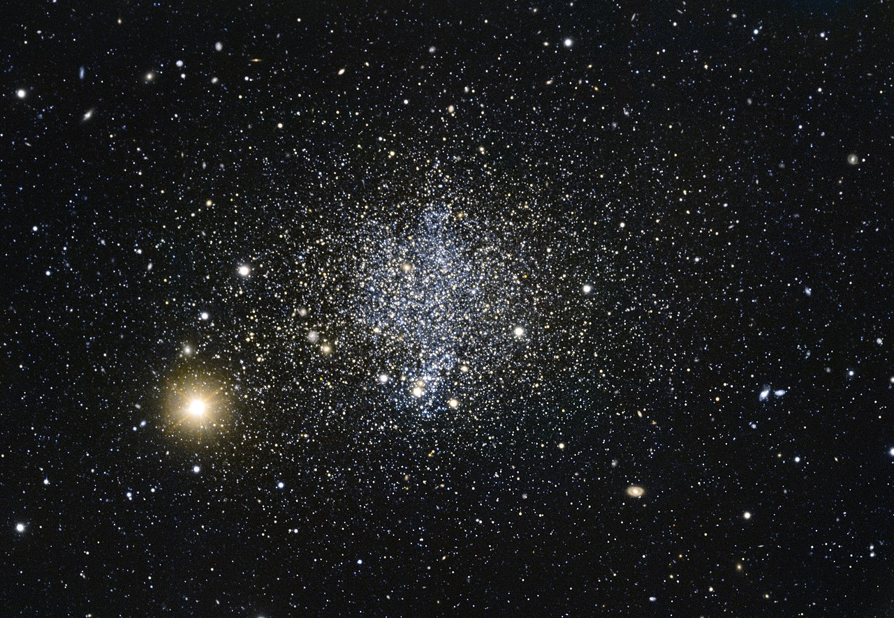

A galaxy is a large collection of stars, planetary systems, gas nebulae, dust clouds, dark matter and other astronomical objects bound by gravity. Its diameter can be several hundred thousand light years and its appearance, greeting and composition can vary greatly. With current technology, more than 50 billion galaxies can be observed from Earth. Since 2016, research assumes that there are about a billion.

Structure of a Galaxy
Large galaxies often form the structure of spirals. Such galaxies are disk-shaped, whose appearance resembles a spiral pattern with several spiral arms. The central region, called "bulge", turns on its own axis and consists mainly of older stars. Spiral galaxies contain a relatively large amount of gas in the disk, so new stars can be formed permanently.
Types of Galaxies
Besides the spiral galaxies there are other types. Among them are for example active galaxies or dwarf galaxies. Dwarf galaxies are galaxies with lower brightness and much more numerous than giant galaxies. The number of stars in a dwarf galaxy is only between a few 100,000 and a few billion stars, while our spiral Milky Way counts about 300 billion stars. An active galaxy is generally a subgroup of galaxies with a particularly bright core. This high luminosity most likely indicates an active massive black hole at the center of the galaxy.
Let's talk about Clusters of Galaxies and what makes them so interesting.